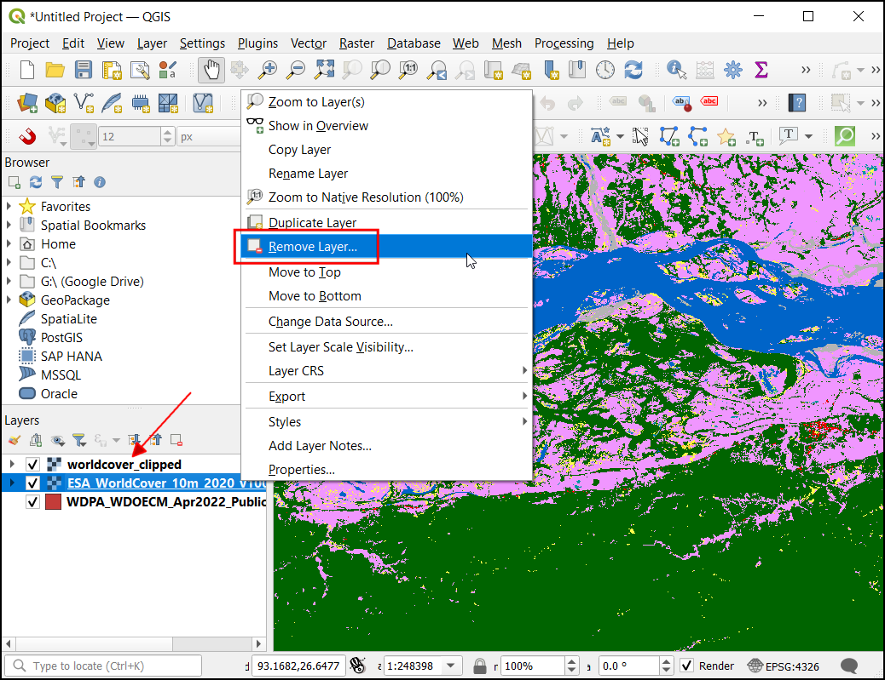
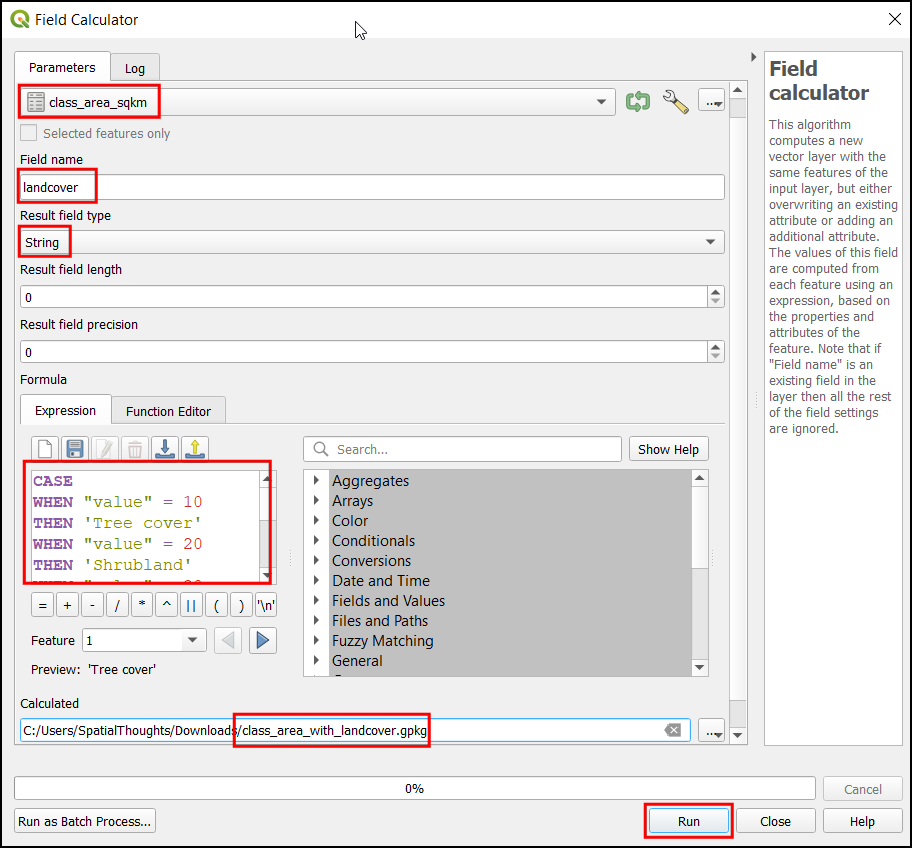

Ujaval Gandhi
Ujaval GandhiIzračunavanje površine rastera (QGIS3)¶
Mnoge aplikacije zahtevaju kvantifikaciju obrazaca korišćenja zemljišta u regionu. Skupovi podataka o korišćenju zemljišta i pokrivenosti zemljišta (LULC) dolaze kao rasterske datoteke gde je svakom pikselu dodeljena vrednost klase. GIS analitičari često moraju da generišu izveštaje na osnovu ovih podataka izračunavanjem površine po klasi u datom regionu. QGIS dolazi sa mnogim ugrađenim alatima za izračunavanje i sumiranje rasterske površine.
Белешка
Istorijski gledano, predloženi pristup za izračunavanje površina za rastere bio je konvertovanje rastera u vektorski sloj i korišćenje tehnika izračunavanja vektorske površine. Ovaj pristup je prilično računski intenzivan i sklon greškama. Preporučeni pristup je korišćenje alata za obradu Izveštaj o jedinstvenim vrednostima rasterskog sloja koji može direktno izračunati površine piksela. Ako imate sloj sa mnogo poligona i potrebne su vam površine za svaki od njih, možete koristiti alat Zonalni histogram da biste dobili broj piksela za svaku klasu, a zatim ga pomnožili sa površinom svakog piksela.
Pregled zadataka¶
Koristićemo rasterski sloj sa 11 klasa pokrivenosti zemljišta i izračunaćemo površinu svake klase unutar nacionalnog parka. Takođe ćemo naknadno obraditi rezultate kako bismo kreirali tabelu sa nazivima klasa i površinama.
Druge veštine koje ćete naučiti¶
Kako primeniti simbologiju na sloj iz stilske datoteke u .qml formatu.
Kako napisati izraze sa više if/else uslova koristeći naredbu CASE.
Kako eksportovati QGIS tabelu kao Excel tabelu.
Dobijte podatke¶
Preuzećemo sledeće skupove podataka
Svetska baza podataka o zaštićenim područjima (WDPA): Preuzećemo shapefile za granicu Nacionalnog parka Kaziranga u Indiji.
ESA WorldCover 2020: Proizvod Evropske svemirske agencije (ESA) WorldCover 10 m 2020 pruža globalnu mapu pokrivenosti zemljišta za 2020. godinu u rezoluciji od 10 m. Preuzećemo pločicu koja pokriva naš region od interesa.
Granica parka¶
Idite na veb stranicu „Zaštićena planeta <https://www.protectedplanet.net/>“ i kliknite na polje za pretragu. Potražite „Nacionalni park Kaziranga“.

Granica zaštićenog vektora biće prikazana kao rezultat pretrage. Kliknite na nju da biste videli stranicu za Nacionalni park Kaziranga.
Ova stranica će sadržati dodatne informacije kao što su ukupna površina, godina kreiranja itd. Kliknite na Preuzmi i kliknite na SHP da biste preuzeli podatke u Shapefile formatu.

Biće ponuđene dve opcije za preuzimanje. Kliknite na continue pod Noncommercial Use. Sada će biti preuzeta zip datoteka koja sadrži granice nacionalnog parka.

Podaci o pokrivaču zemljišta¶
Idite na veb-sajt ESA WorldCover i kliknite na meni PRISTUP PODACIMA.

Pomerite se nadole do odeljka PREUZIMANJE PODATAKA i kliknite na vezu da biste otvorili WorldCover pregledač
Potrebno je da kreirate besplatan nalog da biste preuzeli podatke. Kliknite na vezu Registruj se u gornjem desnom uglu. Pratite uputstva da biste kreirali novi nalog.

Nakon kreiranja naloga, prijavite se koristeći akreditive. Područje koje nas zanima u ovom tutorijalu je Nacionalni park Kaziranga. Uvećajte region severoistočne Indije. Kada dovoljno uvećate, počeće da se pojavljuje okvir za ograničavanje pločica slike pokrivača zemljišta.

Pretražite i pronađite region pločica „N24E093“.

Izaberite pločicu i kliknite na DALJE.

Kliknite na PREUZMI da biste preuzeli zip datoteku koja sadrži informacije o pokrivaču zemljišta u rasterskom formatu. Obavezno izaberite WorldCover verzija 1 podatke za preuzimanje.

Takođe ćemo preuzeti datoteku simbologije koju je obezbedila ESA. Posetite stranicu ESA WorldCover Data Access., Pomerite se nadole do odeljka Simbologija. Kliknite na QGIS da biste preuzeli datoteku ESAWorldCover_ColorLegend.qml koja se može koristiti za stilizovanje rasterskog sloja odgovarajućim bojama i oznakama klasa.
Radi lakšeg snalaženja, možete direktno preuzeti kopiju skupova podataka sa donjih linkova:
Granica Nacionalnog parka Kaziranga WDPA_WDOECM_Apr2022_Public_10744_shp_0.zip
ESA WorldCover Tile N24E093 subset terrascope_download_20220422_114733.zip
ESA WorldCover QML Style file ESAWorldCover_ColorLegend.qml
Izvor podataka [WDPA] [WorldCover]
Procedura¶
Raspakujte sve preuzete datoteke. U pregledaču pronađite fasciklu koja sadrži datoteku granica
WDPA_WDOECM_Apr2022_Publicc_10744_shp-polygons.shpi prevucite je i ispustite na QGIS platno.

Sada pronađite rastersku pločicu worldcover
ESA_WorldCover_10m_2020_v100_N24_E093_Map.tifi otpustite je na QGIS platno.

Sada ćete imati učitane i vektorske granice i sloj rasterskog pokrivača zemljišta u panelu Slojevi. Hajde da iseckamo rasterski pokrivač zemljišta na granicu nacionalnog parka. Idite na da biste otvorili kutiju sa alatkama za obradu. Potražite i pronađite algoritam . Dvaput kliknite da biste ga pokrenuli.

U dijalogu Iseci raster pomoću maskiranog sloja, izaberite sloj
ESA_WorldCover_10m_2020_v100_N24_E093_Mapkao Ulazni sloj i slojWDPA_WDOECM_Apr2022_Publicc_10744_shp-polygonskao Maskirani sloj. Unesite-9999u odeljak Dodeli određenu vrednost nodata izlaznim opsezima.

Sada otvorite odeljak Napredni parametri i izaberite
Visoka kompresijau Profil. Sada pod Odsečeno (maska), kliknite na...i izaberite Sačuvaj u datoteku…. Unesite ime datoteke kaoworldcover_clipped.tif. Kliknite na Pokreni.

Sada će sloj „worldcover_clipped“ biti učitan u QGIS platno. Kliknite desnim tasterom miša na sloj „ESA_WorldCover_10m_2020_v100_N24_E093_Map“ i izaberite :guilabel:„Ukloni sloj…“

Oba naša sloja dolaze u geografskom CRS-u
EPSG:4326. Ovaj CRS ima jedinice stepeni i nije pogodan za izračunavanje površine. Prvo moramo ponovo projektovati slojeve u projektovani CRS. Za regionalne analize poput ovih, UTM je dobar izbor za projektovani CRS. Ponovo ćemo projektovati slojeve u CRS za lokalnu UTM zonu. Otvorite alatku za obradu i potražite algoritam . Dvaput kliknite da biste ga pokrenuli.

U dijalogu Reproject Layer, izaberite sloj
WDPA_WDOECM_Apr2022_Publicc_10744_shp-polygonskao Input layer, kliknite na dugme Select CRS ispod Target CRS.

Naše područje interesovanja spada u UTM zonu 46N. Potražite 46 N i izaberite CRS „WGS 84 / UTM zona 46N“.

Белешка
Da biste saznali koja je UTM zona za vaš region, pogledajte veb stranicu „Koja sam UTM zona ja na <https://mangomap.com/robertyoung/maps/69585/what-utm-zone-am-i-in-#>“.
U odeljku Reprojected kliknite na
...i izaberite Sačuvaj u datoteku…. Unesite ime kaonationalpark_reprojected.gpkg. Kliknite na Pokreni.

Sada će sloj
nationalpark_reprojectedbiti učitan u platnu. Kliknite desnim tasterom miša na slojWDPA_WDOECM_Apr2022_Publicc_10744_shp-polygonsi izaberite Ukloni sloj… da biste ga uklonili. Sada ćemo ponovo projektovati rasterski sloj. U Alatke za obradu, potražite i pronađite

U dijalogu Warp (Reproject) izaberite
worldcover_clippedkao Input layer, izaberiteWGS 84 / UTM zone 46NCRS u Target CRS. Otvorite Advanced Parameters i izaberiteHigh Compressionu Profile.

Sada pod Reprojected, kliknite na
...i izaberite Sačuvaj u datoteku…. Unesite ime kaoworldcover_reprojected.tif. Kliknite na Pokreni.

Sada će sloj
worldcover_reprojectedbiti učitan na platno, uklonite slojworldcover_clipped. Postavimo sloj projekta na UTM zonu. Kliknite na bilo koji sloj i izaberite .

Sada će projekat CRS biti ažuriran. Hajde da podesimo simbologiju rasterskog sloja prema nazivima klasa i bojama ESA WorldCover skupa podataka. Kliknite desnim tasterom miša na sloj
worldcover_reprojectedi kliknite na Properties…

U dijalogu Svojstva sloja, izaberite Simbolologija. Primetićete da su boje sloja vizuelno prikazane u belo-crnom tonu. Da biste to popravili, kliknite na . Pregledajte i izaberite datoteku
ESAWorldCover_ColorLegend.qml.

Sada možete videti ažurirane boje simbola i opise klasa. Kliknite na OK.
Proširite sloj
worldcover_reprojectedu panelu Layers da biste videli legendu sa ispravnim opisima klasa.

Sada izračunajmo površinu za svaku klasu. U alatkama za obradu, potražite i pronađite alatku Izveštaj o jedinstvenim vrednostima rasterskog sloja. Dvaput kliknite da biste je otvorili.

U dijalogu Izveštaj o jedinstvenim vrednostima rasterskog sloja, izaberite Ulazni sloj kao
worldcover_reprojected. U okviru Tabele jedinstvenih vrednosti kliknite na...i izaberite Sačuvaj u datoteku…. Unesite ime kaoclass_areas.gpkg. Kliknite na Pokreni.

Sada će sloj
class_areasbiti dodat na panel Layers. Kliknite desnim tasterom miša na sloj i izaberite Open Attribute Table. Kolonam2sadrži površinu za svaku klasu u kvadratnim metrima.

Hajde da konvertujemo površinu u kvadratne kilometre. U Alatke za obradu, pretražite i izaberite .

U dijalogu Field Calculator, izaberite sloj
class_areasu Input Layer. Unesite Field name kaoarea_sqkm. U Result field type izaberiteFloat. U prozoru Expression unesite donji izraz. Ovo će konvertovati sqmt u sqkm i zaokružiti rezultat na 2 decimalna mesta. U okviru Calculated kliknite na...i izaberite Save To File…. Unesite naziv kaoclass_area_sqkm.gpkg. Kliknite na Run.
round("m2"/ 1e6, 2)
Sada će sloj
class_area_sqkmbiti učitan u platnu. Otvorite tabelu Atributi i ispitajte novododatu kolonu area_sqkm. Primetićete da kolona Value sadrži brojeve za svaku klasu. Da bismo rezultate lakše interpretirali, dodajmo i opis za svaki broj klase. Opisi klasa su dostupni u ESA Product User Manual.

Otvorite Kalkulator polja i izaberite sloj
class_areas_sqkmu Ulazni sloj. Unesite Naziv polja kaolandcover, u Tip polja rezultata izaberiteString. U prozoru Izraz unesite dolenavedeni izraz. Ovaj izraz koristi izraz CASE da bi dodelio vrednost na osnovu više uslova. U okviru Izračunato kliknite na...i izaberite Sačuvaj u datoteku…. Unesite naziv kaoclass_area_with_landcover.gpkg. Kliknite na Pokreni.
CASE WHEN "value" = 10 THEN 'Tree cover' WHEN "value" = 20 THEN 'Shrubland' WHEN "value" = 30 THEN 'Grassland' WHEN "value" = 40 THEN 'Cropland' WHEN "value" = 50 THEN 'Built-up' WHEN "value" = 60 THEN 'Bare / sparse vegetation' WHEN "value" = 70 THEN 'Snow and Ice' WHEN "value" = 80 THEN 'Permanent water bodies' WHEN "value" = 90 THEN 'Herbaceous wetland' WHEN "value" = 95 THEN 'Mangroves' WHEN "value" = 100 THEN 'Moss and lichen' END
Sada će sloj
class_area_with_landcoverbiti učitan u platnu. Otvorite tabelu atributa. Kolona landcover će sadržati naziv landcover-a za svaku vrednost landcover-a.

Eksportujmo ovaj rezultat kao eksel datoteku. Pre izvoza ćemo takođe organizovati tabelu i ukloniti neželjena polja. U Alatke za obradu, potražite i izaberite .

U dijalogu Refactor Fields, izaberite sloj
class_area_with_landcoveru Input Layer. Izaberite sve kolone osim area_sqkm i landcover, a zatim kliknite na Delete selected field.

Takođe možete promeniti redosled polja u tabeli pomoću dugmeta Premesti izabrana polja. Kada završite sa izmenama, kliknite na dugme
...pored Refaktorisano i izaberite Sačuvaj u datoteku…. IzaberiteXLSX datoteke (*.xlsx)kao format. Unesite ime datoteke kaopark_area_by_landcover.xlsxi kliknite na Sačuvaj. U dijalogu Refaktorisana polja kliknite na Pokreni da biste primenili izmene.

Rezultat će biti tabela sa kolonama pokrivenost zemljišta i površina u kvadratnim kilometrima.

If you want to give feedback or share your experience with this tutorial, please comment below. (requires GitHub account)